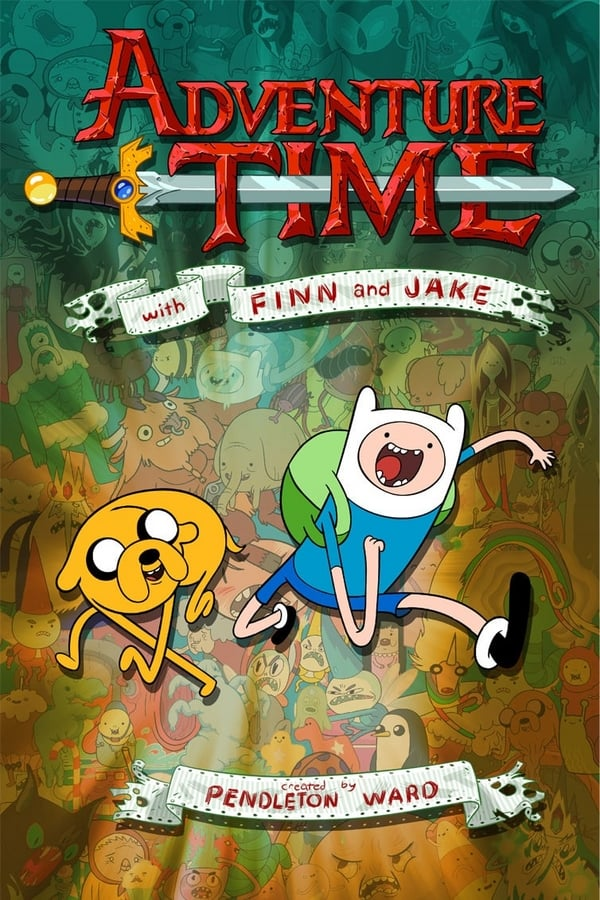

Finn é um garoto gentil e bondoso mais não perde tempo quando o assunto é Aventura junto com seu amigo Jake ele viaja por toda terra de Ooo a procura de de seu melhor passa tempo:Aventura.Jake é um cachorro magico que ajuda Finn em todas suas aventuras com seus poderes de esticar.A mãe e o pai de Jake foram os cachorros que encontraram Finn chorando numa montanha e o resgataram por isso os destinos de Finn e Jake foram cruzados.Hoje eles vivem procurando aventuras pela terra de Ooo salvando princesas e pessoas indefesas.Por isso são conhecidos como os hérois da terra de Ooo.
